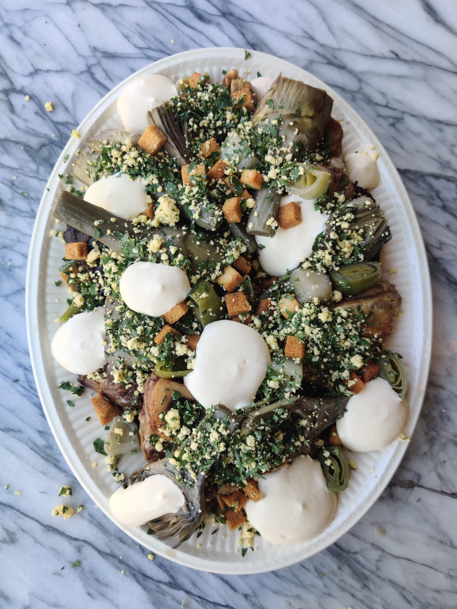

Before the Olijpodrigo came to Taste of Time, the dish took a long journey; both in time and in space.
The story of this dish begins on the Iberian Peninsula. The Spaniards and Portuguese took all their
leftover meat and vegetables and threw them together in a pan and called this olla podriga, which
literally means "rotten pot".
It was ultimately the Vatican's house cook, Bartolomeo Scappi, who first published a recipe for this casserole in 1570, in his book Opera dell'arte del cucinare. Antonius Magirus, a mysterious cookbook writer from the Low Countries, based his book Koock-boeck oft Familieren Keuken-boeck on the work of his Italian colleague, thus circulating the first Dutch-language recipe of the Olla podriga. He renamed the dish to Olipodrigo.
The version that we copy here is probably one of a century or two later. We found the recipe for this in the Utrecht Archives. It is part of a handwritten cooking booklet that was once owned by Mrs. Susanna Martens van Sevenhoven (1799-1860). It is impossible to say whether it was also written by her, but it is most likely that the recipes in it were copied from another cookbook. This “Utrecht” version of the Olipodrigo is different from that of Magirus, but the idea is the same: a pot full of meat.
We changed the recipe a bit. First, to reduce the portion slightly. Second, to tune the dish a little more to a 21st-century palette of flavors. Where the original dish was in fact a dish full of cooked-to-death meats and vegetables, we have opted for a gentle braising of the meats and a shorter cooking time for the veg. By paying a little more attention to the differences in the cooking time of all products, you get more variety, both in taste and structure.
As far as we are concerned, the soul of the dish has been preserved, despite a few minor adjustments. After all, we didn't add anything flavorwise, just adapted the technique a little. In addition, it is also true that recipes were a lot more "free" 200 years ago. Nowadays, you are guided through a recipe from start to finish, but back then, recipe writers really counted on the know-how of the chef. In modern day recipes, you get all information neatly sorted, in the form of ingredient lists, step-by-step instructions, precise sizes, temperatures and times. at the beginning of the 19th century, however, a recipe had to be interpreted much more. The ingredients are spread over the entire recipe and quantities are rarely given exactly; usually it concerns "pints", "cups" and "handfuls". Temperature is not written at all.

For 5 big eaters you will need:
- 1 pork trotter
- 2 chicken legs
- 3 veal shanks
- 6 meaty lamb ribs
- 6 pork ribs
- 2 strips of featherblade or any other stewing cut
- 4 artichokes
- 1 leek
- 1 head lettuce
- 1 bunch of sorrel
- mace
- black pepper
- 4 egg yolks
- 1 lime
- 100 grams of clarified butter
- 3 hard boiled eggs
- parsley
- 3 slices of white bread
For best results, start a day in advance.
Start making the stock. Place the trotter and chicken legs in a large pan with cold water. Bring this to a boil and skim off the foam. A lot of impurities will come from the pig's leg in particular. Let it steep for at least an hour and a half over low heat, but longer is certainly allowed.
While the stock is on, color the meat in a hot pan with a tablespoon of oil or butter. In which order or composition does not matter, as long as the pieces get a nice brown crust. The baking of the meat is one of the differences between the original and this version, because it really brings out the meaty flavors. Put the colored pieces of meat together in a stew or baking dish.
Spoon a few good spoons of the stock into the pan or baking dish with the pieces of meat. Make sure that the meat is about half covered with moisture, but more importantly, you have about three quarters of a liter of stock for the vegetables and the hollandaise. Put the pan in an oven at 120C for four hours.
After four hours in the oven, the meat is stewed and should fall off the bone. The best thing now is to take the meat out of the pan and put it somewhere covered in the fridge. Do the same with the braising liquid left in the pan. The reason you want to do this is that the broth can set overnight, so that you can easily scoop off the solidified fat. We are going to reduce this stock to a powerful gravy. If you want to serve the dish the same evening, it is best to try to remove as much of the fat as possible with a ladle. Then pour the stock through a sieve or cloth and reduce it to a syrupy gravy.
Start stewing the vegetables at least an hour in advance. Take a good knob of butter and a splash of the broth. add a pinch of salt, 15 turns of black pepper and a pinch of ground mace. This is the liquid in which you cook all the vegetables one by one. Start with the artichokes. Clean and cut them in half. Stew them for 10 to 15 minutes. Place them on an ovenproof plate
Cut the leek into rings as thick as your thumb. Slowly cook these in the same liquid as the artichokes. This takes 5 to 10 minutes. Place them on the plate with the artichokes.
With the lettuce and sorrel we wait until just before serving. Meanwhile, focus on the garnishes. For the croutons, cut the white bread into dice, which you then sprinkle with oil and salt. 10 minutes in a 200 degree oven until golden brown.
finely chop the parsley and mix with the mashed yolks of the boiled eggs.
About 45 minutes before serving, place the meat in an oven dish to gently heat in an oven of 120 degrees
For the sauce, take four egg yolks, a dash of our stock, the juice of three-quarters lime and a pinch of salt. You will beat this mixture lightly with a whisk. First off the stove, then on the stove. Make sure you heat the mixture evenly by keeping it constantly moving. As the mixture gets warmer, the yolks will begin to bind, giving you a thick foam where your whisk's threads leave a visible trail. As soon as this happens, remove the pan from the heat and stir in 100 grams of clarified butter. Do not do this too quickly or the sauce will split. optionally, transfer the sauce to a whipping siphon and charge with 2 to 3 cartridges. Keep the sauce warm until needed. Put the artichokes and the leek in the oven to warm up.
Finally, cut the lettuce into quarters and simmer in the same liquid as the artichokes and the leek. Remove the tough grain from the sorrel leaves. After two minutes the lettuce will be cooked. It has shrunk slightly and has become a bit weaker, but has retained its green color and still has a small bite. This is in contrast to the sorrel, which goes into the pan last. It takes less than 30 seconds to change from green to brownish gray. Not the most attractive color, but inevitable.
Now you can start plating your dish. Start with the sorrel and the lettuce at the bottom of a large plate. divide the pieces of meat, which you glaze lightly with the gravy, over the lettuce and sorrel. Place the artichokes and the leek between the meat and sprinkle over the yolk-parsley mixture and the croutons. Finally, spoon or spray the sauce over it in dots. Eet Smaeckelijck!!!